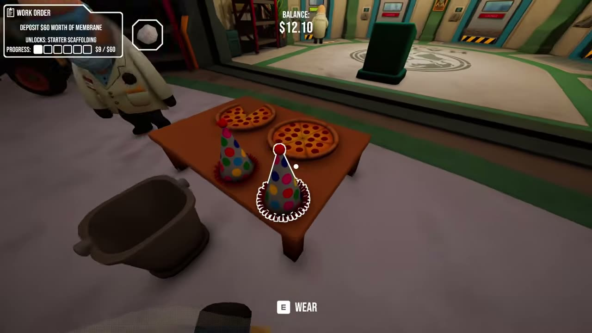
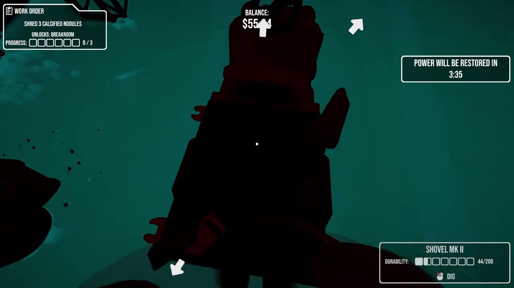
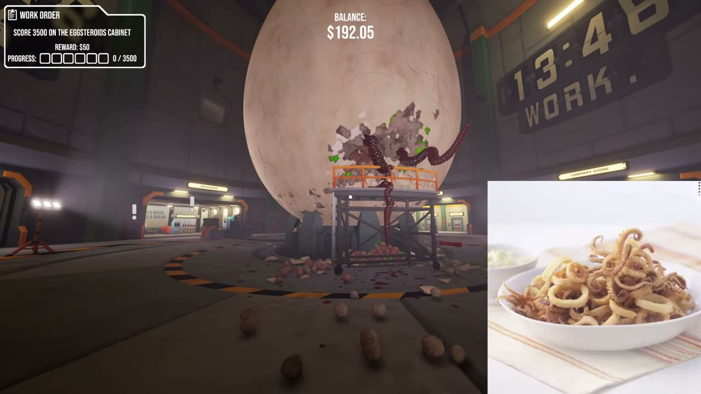
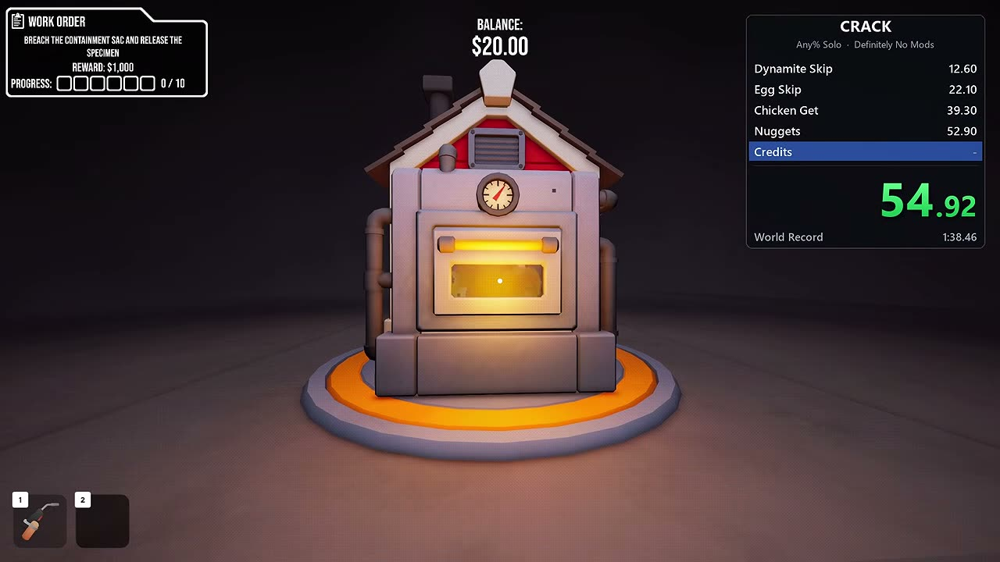

CRACK review: three-player egg cracking, then a modded speedrun

CRACK is an incremental adventure from Rafoli that you can play solo or in online co-op with up to four players. It came out on Steam on October 26, 2026. There's a giant egg in a lab and your job is to crack it open, no questions asked. Along the way you upgrade your tools and unlock hidden rooms, and the egg reacts to you. Rafoli is building it live and taking player requests.
Two friends and I spent our shifts making each other's jobs harder. First we tried the recycling shredder on a teammate. It didn't kill him, but it does pay five dollars for anything you drop in, so I shredded the employee handbook. We put on party hats at the pizza party and went right back to stealing buckets: one got grabbed right off the shop conveyor, and I ran a friend over with the golf cart to take his. During a power cut a pipe burst and flooded the whole egg chamber. One of my friends still finished top earner almost every shift. I made a kraken joke, and right after that, tentacles came out of the shell.


Then I went back alone with our own mod tools for a "Definitely No Mods" speedrun. One Dynamite MK III, boosted by the mod, blows the entire shell apart and rains it down on me. I grab the loose chicken, cook it and pack the nuggets. Our timer says 1:38.45, a new world record by 0.01 seconds. The in-game clock says five or six minutes, and our mod tools mark the run unranked, so it never touched a real leaderboard. The end screen does list zero dig swings, zero scaffolding placed and zero explosives detonated.


CRACK is $7.99 on Steam. Both videos are below. CRACK on Steam